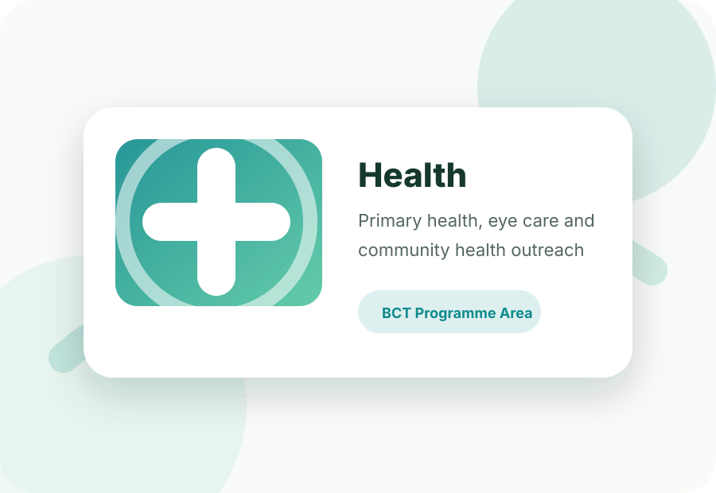

Health
Primary health, eye health, women and child care, HIV/AIDS prevention and mobile health initiatives.
- Urban Health
- Eye Health Care
- Women & Child Care
- Prevention of HIV/AIDS
- Reproductive & Child Healthcare
- Primary Health Care & Family Welfare
- Low Vision Eye Program for School Children
- Chogmal Bhoruka Hospital (CBH), Bhorugram
- Mobile Medical Units / Mobile Medical Vans
- Humsafar
- Jaipur Urban Eye Health
- Health of the Urban Poor (HUP) Program, Jaipur
- Wheat Flour Fortification Project
- Foster Care Programme (Orphan and Vulnerable Children): Inch
- SURAKSHA–(HPCL)
- Humraahi
- Mission against Malnutrition
- Chinnara Loka